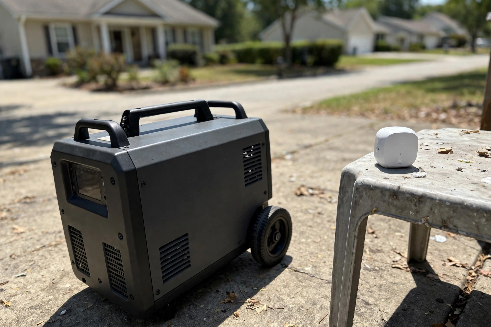

Portable Power Stations for a 72-Hour Home Kit: What Actually Matters Before You Buy
What size power station do I need for a 72-hour kit?
For a 72-hour home kit, start with a portable power station, not a generator. A station runs phones, lights and a fridge indoors with no fuel or fumes, and recharges from a wall outlet or solar panel. Pick the size by what must stay on: phones and lights need the least, a fridge needs the most. Check the size against your own list before you buy.
Our pick: EcoFlow DELTA 2 (1,024Wh) — the best-overall pick in our research: fast charging and a UPS mode, so it can sit between the wall and a device.
Check price on AmazonAffiliate link to be added after approval. No price shown here — check it on Amazon.
At a glance
| Station | Best for | Check price |
|---|---|---|
| EcoFlow DELTA 2 | Best overall for a 72-hour kit | Link pending |
| Jackery Explorer 1000 v2 | Carrying room to room | Link pending |
| Anker SOLIX C1000 Gen 2 | Fast top-ups between outages | Link pending |
| EcoFlow DELTA Pro 3 | Whole-home backup | Link pending |
| Jackery HomePower 3600 Plus | Home backup, year-round | Link pending |
| Champion 4500W generator | Long outages with fuel available | Link pending |
| MARBERO 296Wh + panel | Lights and phones on a budget | Link pending |

We may earn a commission if you buy through links on this page. As an Amazon Associate I earn from qualifying purchases.
What you need
Seven stations our research scored highest for home use. No prices here on purpose — check the price on Amazon, and check the size against the list of things you need to keep running.
EcoFlow DELTA 2 (1,024Wh)
The best-overall pick in the November 2026 round-ups our research reviewed. Fast charging and a UPS mode, so it can sit between the wall and a device.
Watch out: It is a mid-size station, not whole-home backup — it will not run a full house, and it needs recharging after heavy use.
Check price on AmazonAffiliate link to be added after approval. No price shown here — check it on Amazon.
Jackery Explorer 1000 v2
The lightest station in its size class in our research, at 22 lbs. Easier to carry room to room or out to a car than most rivals its size.
Watch out: Check the solar kit version separately if you want solar — the base station on its own does not include panels.
Check price on AmazonAffiliate link to be added after approval. No price shown here — check it on Amazon.
Anker SOLIX C1000 Gen 2 (1,024Wh)
The fastest recharge in its class in our research. Useful when the power comes back for a short window and you need to top up quickly.
Watch out: Fast charging is only useful if you have power to charge from — plan a solar panel too if outages run long.
Check price on AmazonAffiliate link to be added after approval. No price shown here — check it on Amazon.
EcoFlow DELTA Pro 3
Whole-home backup, and the highest commission-per-sale station in our research. The pick if the job is keeping a whole home running, not just phones.
Watch out: It is the biggest, heaviest and most expensive station in this guide. Overkill for a 72-hour kit of phones, lights and a fridge.
Check price on AmazonAffiliate link to be added after approval. No price shown here — check it on Amazon.
Jackery HomePower 3600 Plus
Home backup sized between a portable station and a whole-home system. Year-round demand, not just storm season.
Watch out: Check the weight and where it will live before you buy — this is not a carry-it-room-to-room station.
Check price on AmazonAffiliate link to be added after approval. No price shown here — check it on Amazon.
Champion 4500W dual-fuel inverter generator
Dual-fuel (petrol and propane) and a current-events search term in our research. Runs longer than a battery station when fuel is available.
Watch out: Outdoor use only, and you need a carbon monoxide alarm with it. Never run a fuel generator indoors or in a garage.
Check price on AmazonAffiliate link to be added after approval. No price shown here — check it on Amazon.
MARBERO 296Wh solar generator + 60W panel
The cheapest real solar-generator entry in our research. A small, impulse-priced way to keep phones and lights going.
Watch out: Small capacity — it will not run a fridge. Treat it as a lights-and-phones backup, not a home backup.
Check price on AmazonAffiliate link to be added after approval. No price shown here — check it on Amazon.
How to pick a size
- List what must stay on. Phones, lights and a fan are the small loads. A fridge is the big one. Write the list before you shop, or you will buy the wrong size.
- Match the station to the list, not the other way round. A mid-size station covers phones, lights and a small fridge for a short outage. Whole-home backup needs a much bigger station.
- Plan how it recharges. Wall outlet first, solar panel second. A station you cannot recharge is a one-use battery.
- Test it before you need it. Charge it, plug in the fridge, and see how long it actually runs. Do that on a normal day, not during a storm.


Photos still needed
Photos are now in place for the hero, the solar recharge step, the generator safety note and the 72-hour kit contents (see Photo credits). Still missing — needs real at-home photos of the actual models:
- A station next to a fridge, with the cable visible
- A station charging from a solar panel in daylight, panel to station
- Real test photos of the stations in this guide, taken at home
Comparison
| Station | Best for | What to check before you buy | Watch out for |
|---|---|---|---|
| EcoFlow DELTA 2 | Best overall for a 72-hour kit | Capacity (1,024Wh), fast charge, UPS mode | Mid-size only — not whole-home backup |
| Jackery Explorer 1000 v2 | Carrying room to room | Weight (22 lbs in our research), solar kit option | Panels sold separately on the base version |
| Anker SOLIX C1000 Gen 2 | Fast top-ups between outages | Recharge speed, capacity (1,024Wh) | Needs a power source or solar to recharge |
| EcoFlow DELTA Pro 3 | Whole-home backup | Whole-home capacity, where it will live | Big, heavy, most expensive here |
| Jackery HomePower 3600 Plus | Home backup, year-round | Weight, placement, capacity | Not a portable carry-around station |
| Champion 4500W generator | Long outages with fuel available | Dual-fuel, outdoor placement, CO alarm | Outdoor only — never indoors |
| MARBERO 296Wh + panel | Lights and phones on a budget | Capacity (296Wh), panel included | Will not run a fridge |
How we picked
Our research scored 25 products across the four test areas on demand, growth, search intent, beatable competition, conversion, content ease, return risk, repeat purchases and platform fit (product-scores.csv). This guide covers the 7 power products in that set. Specs come from the manufacturers' own pages and the round-ups our research reviewed.
| Products scored in our research | Products in this guide | Hands-on tests run |
|---|---|---|
| 25 | 7 | 0 — none yet |
What we have not done yet: no product in this guide has been tested hands-on by us. When we test one at home, this box will say so, with the date.
Troubleshooting
The station runs out faster than expected
Check what is actually plugged in. A fridge starting up draws far more than its running load, and anything with a heater (kettle, hair dryer) will drain a station in minutes. Unplug the heaters first.
It will not charge from solar
Check the panel is in direct sun, not shade, and that the cable is the one the station expects. Panels in a window charge far slower than panels outside.
The generator will not start
Check the fuel, the fuel valve and the oil level, and that it has been run recently. A generator that has sat for a year with old fuel in it is the most common failure in our research notes.
Frequently asked questions
Do I need a generator as well as a power station?
For most 72-hour kits, no. A station covers the indoor loads. A generator is for longer outages where fuel is available and you can run it outdoors safely.
Can I run a power station indoors?
Yes — that is the point of a battery station. It has no exhaust. A fuel generator must never be run indoors, in a garage, or near an open window.
What is in a 72-hour kit besides power?
Ready.gov recommends water (one gallon per person per day), three days of food, a NOAA radio, a flashlight and a first aid kit. Power is one part of the kit, not the whole kit.
Sources
- HomeTryout affiliate business opportunity report, 9 Nov 2026 — product scores and prep market validation (product-scores.csv).
- Ready.gov / FEMA — 72-hour emergency kit guidance (1 gallon of water per person per day, 3-day food supply, NOAA radio, flashlight, first aid).
- No federal agency forecasts a nationwide blackout in 2026 — stated in the report and in this guide.
Keep going
 Kitchen & Cleaning
Kitchen & CleaningRobot Vacuum and Mop, Tested in a Real Home: What to Check Before You Buy
What to check before you buy a robot vacuum and mop: thresholds, pet hair, mop contact, and noise.
Read the guide → Home Fitness
Home FitnessWalking Pads for Small Spaces: Quiet, Foldable, and Actually Usable in an Apartment?
Are walking pads quiet, foldable and actually usable in an apartment? What to check before you buy.
Read the guide → Pet Tech
Pet TechAutomatic Litter Boxes, Tested at Home: What a Cat Owner Should Know Before You Buy
What a cat owner should know before buying an automatic litter box: size, noise, running costs, and the cat.
Read the guide →